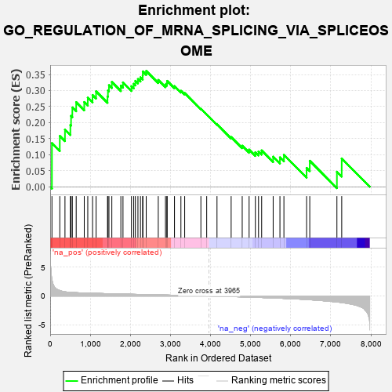
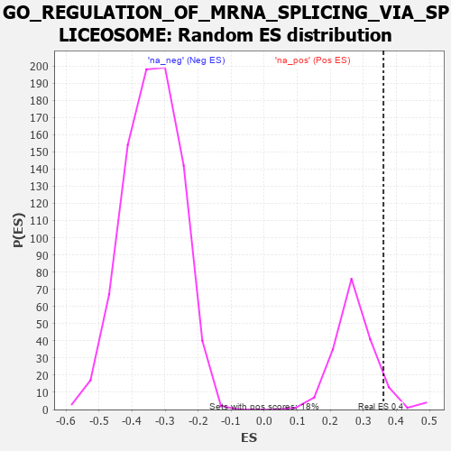

| | | Dataset | 7d |
| Phenotype | NoPhenotypeAvailable |
| Upregulated in class | na_pos |
| GeneSet | GO_REGULATION_OF_MRNA_SPLICING_VIA_SPLICEOSOME |
| Enrichment Score (ES) | 0.36099735 |
| Normalized Enrichment Score (NES) | 1.3153651 |
| Nominal p-value | 0.101123594 |
| FDR q-value | 0.39560252 |
| FWER p-Value | 1.0 |
Table: GSEA Results Summary

Fig 1: Enrichment plot: GO_REGULATION_OF_MRNA_SPLICING_VIA_SPLICEOSOME
Profile of the Running ES Score & Positions of GeneSet Members on the Rank Ordered List
| PROBE | GENE SYMBOL | GENE_TITLE | RANK IN GENE LIST | RANK METRIC SCORE | RUNNING ES | CORE ENRICHMENT | | 1 | PCBP4 | | | 44 | 2.875 | 0.1362 | Yes |
| 2 | SRSF9 | | | 240 | 0.950 | 0.1584 | Yes |
| 3 | LARP7 | | | 369 | 0.731 | 0.1783 | Yes |
| 4 | MYOD1 | | | 504 | 0.628 | 0.1924 | Yes |
| 5 | SF3B4 | | | 521 | 0.622 | 0.2210 | Yes |
| 6 | JMJD6 | | | 553 | 0.613 | 0.2473 | Yes |
| 7 | RBM4 | | | 649 | 0.576 | 0.2637 | Yes |
| 8 | SAP18 | | | 850 | 0.519 | 0.2641 | Yes |
| 9 | CWC22 | | | 938 | 0.498 | 0.2777 | Yes |
| 10 | RBM15 | | | 1057 | 0.473 | 0.2861 | Yes |
| 11 | RBM42 | | | 1145 | 0.455 | 0.2975 | Yes |
| 12 | RBM10 | | | 1430 | 0.404 | 0.2816 | Yes |
| 13 | PTBP1 | | | 1441 | 0.402 | 0.3001 | Yes |
| 14 | U2AF2 | | | 1466 | 0.396 | 0.3166 | Yes |
| 15 | SON | | | 1538 | 0.385 | 0.3267 | Yes |
| 16 | PTBP3 | | | 1763 | 0.344 | 0.3153 | Yes |
| 17 | FMR1 | | | 1816 | 0.334 | 0.3252 | Yes |
| 18 | NSRP1 | | | 2028 | 0.301 | 0.3134 | Yes |
| 19 | SART3 | | | 2084 | 0.293 | 0.3209 | Yes |
| 20 | TRA2A | | | 2125 | 0.287 | 0.3301 | Yes |
| 21 | C1QBP | | | 2189 | 0.278 | 0.3358 | Yes |
| 22 | SRSF1 | | | 2252 | 0.267 | 0.3412 | Yes |
| 23 | REST | | | 2308 | 0.259 | 0.3470 | Yes |
| 24 | SRSF4 | | | 2311 | 0.258 | 0.3595 | Yes |
| 25 | RBM19 | | | 2396 | 0.246 | 0.3610 | Yes |
| 26 | SRSF3 | | | 2696 | 0.199 | 0.3331 | No |
| 27 | CIRBP | | | 2876 | 0.170 | 0.3189 | No |
| 28 | RBM5 | | | 2910 | 0.164 | 0.3228 | No |
| 29 | RBM4B | | | 2918 | 0.163 | 0.3299 | No |
| 30 | SMU1 | | | 3101 | 0.137 | 0.3137 | No |
| 31 | NUP98 | | | 3261 | 0.112 | 0.2992 | No |
| 32 | RBM8A | | | 3355 | 0.096 | 0.2922 | No |
| 33 | SRSF2 | | | 3759 | 0.033 | 0.2429 | No |
| 34 | RBM39 | | | 3904 | 0.010 | 0.2253 | No |
| 35 | DDX17 | | | 4161 | -0.035 | 0.1947 | No |
| 36 | SNW1 | | | 4514 | -0.096 | 0.1550 | No |
| 37 | SRPK2 | | | 4790 | -0.155 | 0.1280 | No |
| 38 | TRA2B | | | 4962 | -0.191 | 0.1158 | No |
| 39 | NOVA2 | | | 5118 | -0.231 | 0.1076 | No |
| 40 | NOVA1 | | | 5197 | -0.247 | 0.1099 | No |
| 41 | CELF4 | | | 5275 | -0.266 | 0.1133 | No |
| 42 | RBM25 | | | 5562 | -0.336 | 0.0938 | No |
| 43 | TIA1 | | | 5731 | -0.386 | 0.0916 | No |
| 44 | CELF5 | | | 5830 | -0.414 | 0.0997 | No |
| 45 | PRDX6 | | | 6396 | -0.615 | 0.0587 | No |
| 46 | CELF3 | | | 6475 | -0.651 | 0.0810 | No |
| 47 | DDX5 | | | 7152 | -1.037 | 0.0468 | No |
| 48 | QKI | | | 7272 | -1.145 | 0.0882 | No |
Table: GSEA details [plain text format]

Fig 2: GO_REGULATION_OF_MRNA_SPLICING_VIA_SPLICEOSOME: Random ES distribution
Gene set null distribution of ES for GO_REGULATION_OF_MRNA_SPLICING_VIA_SPLICEOSOME